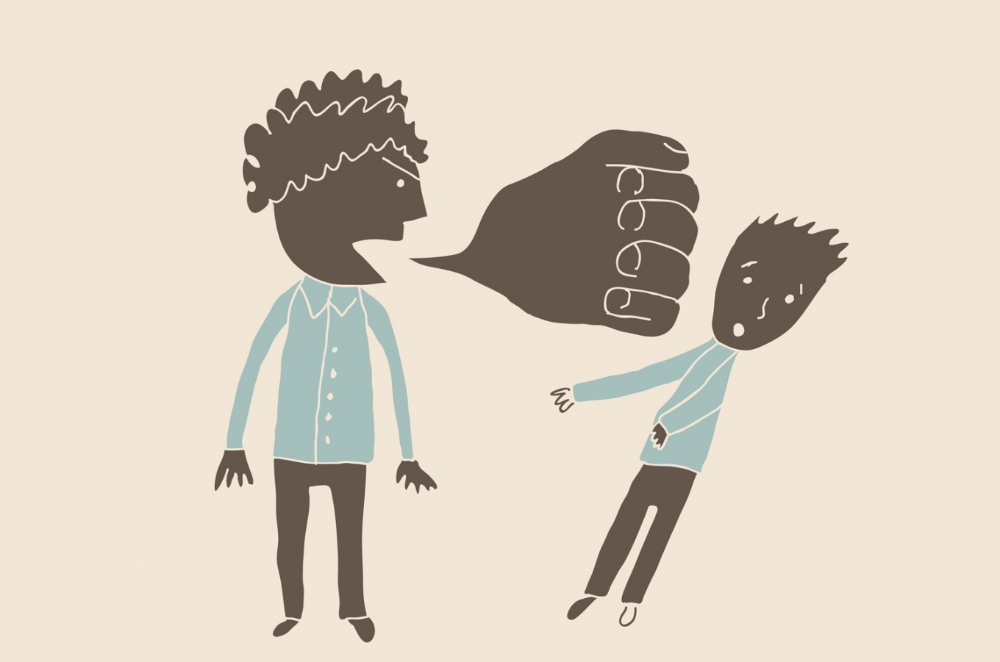
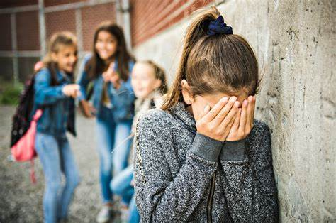

|
 |
|
I think that verbal violence is something that cannot be tolerated because it is something that affects our lives. The consequences are that the person will not always be able to tolerate bad words. The bad thing about verbal violence is that it can take you to the brink of suicide because they already hurt you so much that you don't know how to handle the situation and they don't see things clearly as they should be. The worst thing about this is that you don't know when the person is about to explode (go over their limit). Sometimes people who are victims don't say anything out of fear or just because they don't want to cause problems, but based on that people hold resentment. From my point of view I think that words can reach you more when they are from your loved ones.
|
| ¿WHAT IS VERBAL VIOLENCE? |
| ANTISONANT WORDS: | VERBAL BLOWS: |
 |
 |
| EL BULLYING: | FAMILY VIOLENCE: |
|  |
| TYPES OF VIOLENCE: |
| CUPLE VIOLENCE : | CHILD VIOLENCE: |
| WORKPLACE VIOLENCE: | VIOLENCE AT SCHOOL: |
| ¿HOW TO AVOID VERBAL VIOLENCE? |
| Observe the way you speak and that of others, since the way you speak can provoke intense emotions and reactions. Analyze yourself to detect the fine line between communication and aggression. Be careful with what you look at, listen to and say. In abusive situations, the only way to avoid abuse is to limit contact with the abuser, reduce encounters with him or her, and only interact with the individual in public or when around non-abusive people. |
 |
| VERBAL ABUSE |
Verbal violence is a form of destructive communication in which one person harms another. It is a communicative pattern sustained over time in which, more or less intentionally, continuous verbal abuse is carried out that affects the victim's self-esteem, causing a negative emotional state and generating doubts about their worth as a person. At this point, the abuser may understand that he has crossed the limits and may even fear that the person will abandon him. |
 |
| VERBAL ABUSE IS VIOLENCIE |
.gif) |